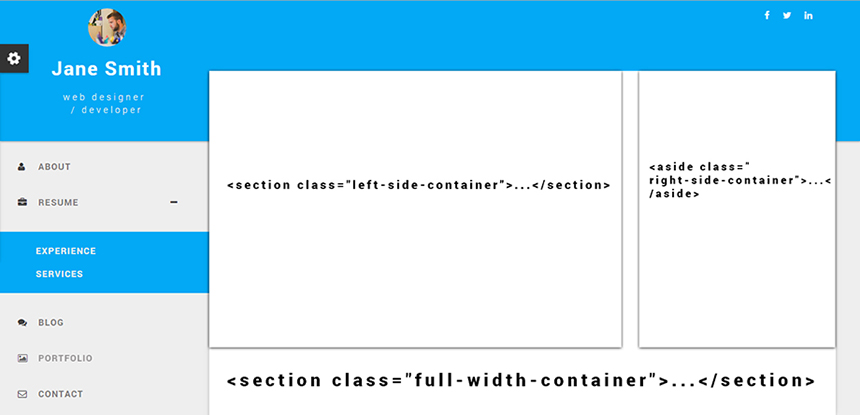

“Shoxi - Personal Vcard & Resume Angular Template” Documentation by “Tuxsanov” v1.0
“Shoxi - Personal Vcard & Resume Angular Template”
Created: 09/2015
By: Tuxsanov
Email: imaterial.co@gmail.com
Thank you for purchasing my theme. If you have any questions that are beyond the scope of this help file, please feel free to email via my user page contact form here. Thanks so much!
Table of Contents
- Installations
- Positioning
- Nav elements and loading files
- JavaScript
- Portfolio
- Forms
- Map
- Colors
- Fonts
- Sources and Credits
A) Installations - top
-
With hosting - You upload all the files to your hosting if you upload under the some path such as
example.com/pathyou have to declare it inside of<base href="/path/">inindex.htmlor you can leave it as is if there not any path.
-
With local hosting - If you want to install locally you have number of options. Such as Gulpjs, Nodejs, Yeoman and others. I would recomended Yeoman scaffolding tool because I found it easy to use and undertsand even if you beginer or intermediate level. Here is the tutorial how to install angular app Tutorial
After you installed the angular app with Yeoman. You have something similar folder and files will be installed

Delete all the files inside of app folder and paste all the files inside of shoxi zip folder.
Then open your command line and type
grunt serveand enter. It will automatically run in the local server.
B) Positioning - top
Template divided into two separated collumns (rightside, leftside) and one header.
Leftside and header will always stays fixed positions. All the content dynamically renders inside of right side.
Inside of right side sections also contains one and two collumns. This sections will follows like this
-
<section class="full-width-container">...</section>Displaying full width container elements
-
<aside class="right-side-container">...</aside>Displaying right side container elements
-
<section class="left-side-container">...</section>Displaying left side container elements

Theme starts from Home page top nav bar. You can add the social icons inside top-nav-socials div element. Social icons can be found from here
C) Nav elements and loading files - top
Nav elements sections located in left side container

In order to loading datas you need to specify nav menu name and the path for the html file
<nav>
<ul class="menu-list">
<li class="load-data" path="views/example.html">nav menu name</li>
</ul>
</nav>
you can create or load completely seperated html files
By setting nav-home class you can declare the which file should be loaded first
<li class="load-data nav-home" path="views/example.html">nav menu name</li>
To achieve dropdown menu is very easy you should simply declare a few angularjs elements to achieve similar effects
-
First declaring li elemen as usual without any classes
<li>drop down</li>
-
Then adding some angularjs click elements
<li ng-click="dropDown = !dropDown">drop down</li>meaning of this when dropDown is true set it false if false set it true
-
Then add which element should be shown
Below the <li> element add another <li> element
<li ng-show="dropDown">
<ul>
<li>...</li>
</ul>
</li>
D) JavaScript - top
This theme imports three Javascript files.
- jQuery
- Bootstrap
- My custom script
- Angular modules
-
Overall app is not depended on jQuery at all. But jQuery added for bootstrap functionalities only
-
inside of app.js modules seperated and you can add your own module inside of app module if you want to.

E) Portfolio & Blog loading files - top
In both pages there have some hard coded angular codes directly inside of html codes overall structure is identical for this I will explain one of them.
There have many choices to hide the angular codes through directives and I think it will be much better if I explain a little bit rather than hiding it
<div data-ng-include="loadViews" class="slide-top" data-ng-if="menu">...</div>
All the datas load inside of loadViews as rendered HTML file

All you nedd you set the loading files properly inside of path <h2 class="info-title loading-items" path="contents/single-portfolio.html">
After loading completed data-ng-if or ng-if hides other part of the page
<div class="portfolio-page" data-ng-if="!menu">... </div>
F) Forms - top
There number of options which you can make some interactivity with forms.
By giving ng-module to the input you can make some interactions.
<h5>Your name is <span ng-bind="user.name"></span></h5>
<div class="contents">
<input type="text" name="name" ng-model="user.name">
<span class="filling"></span>
<label>Name</label>
</div>
G) Map - top
In order to setting map you need your API and the coordinates of your positioning
<div class="personal-map" latitude="..." longitude="..." zoom="..." api="..."></div>
Zoom value from 1 - 15
For mor info how to get your API
H) Colors - top
By changing the
.primary
.accent
.warn stylesheets colors you can change the whole site background colors.
You can change the fonts color by .primary-font
.accent-font
.warn-font adding this colors to specific font element.
Example
<h1 class="warn-font">Warn font</h1>
All the colors seperated stylesheets by adding your own styles
Example
.primary{
background-color: red;
}
I) Fonts - top
If you want to add fonts to specific part of the site you can achieve it by adding name of the icon which is provided in Font-Awesome
<i class="fa fa-iconname">icon name</i>
J) Sources and Credits - top
I've used the following images, icons or other files as listed.
Images - Unsplash
Icons - Font-Awesome
Normalize - Normalize
Angularjs - Angularjs
Bootstrap - Bootstrap
Pexels - Pexels
Once again, thank you so much for purchasing this theme. As I said at the beginning, I'd be glad to help you if you have any questions relating to this theme. No guarantees, but I'll do my best to assist. If you have a more general question relating to the themes on ThemeForest, you might consider visiting the forums and asking your question in the "Item Discussion" section.
Tuxsanov